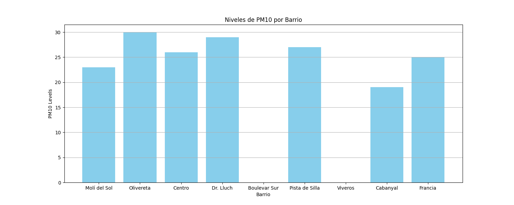

Informe actual de Calidad del Aire
Gráfica de los niveles de NO2 por barrios de Valencia
Gráfica de los niveles de PM10 por barrios de Valencia

Mapa de las estaciones de calidad del aire en Valencia
Datos de la estación Pista de Silla
fiwareid
nombre
no2
pm10
pm25
calidad_am
fecha_carg
A04_PISTASILLA_60m
Pista de Silla
31.0
27.0
15.0
Razonablemente Buena
2025-10-16T09:00:00+00:00